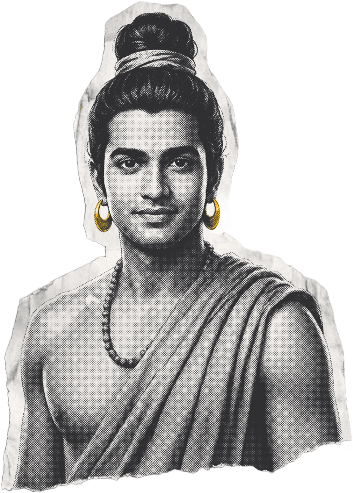
Siddhartha.
2,500 YEARS AGO
a prince!
Born in the Himalayan foothills
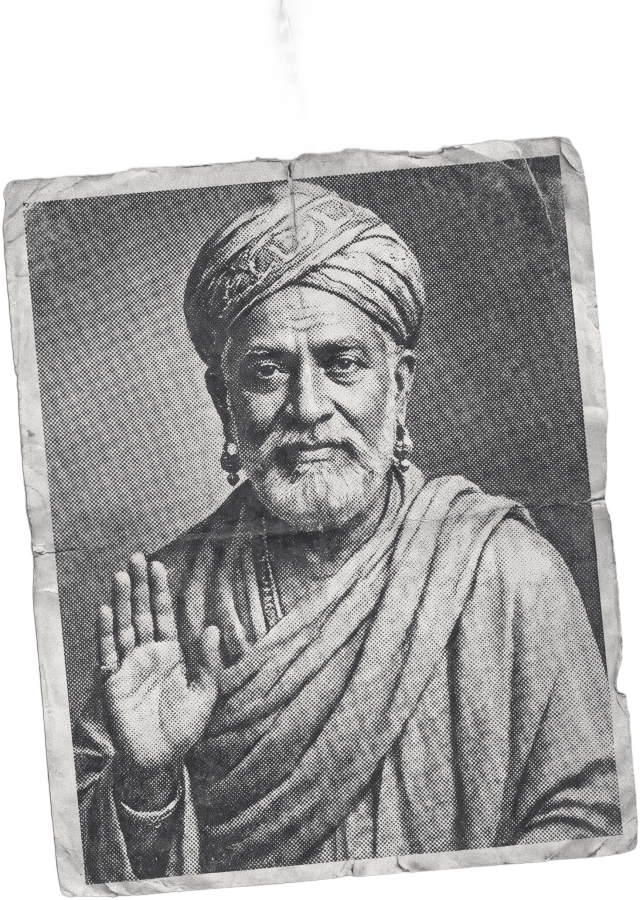
his father
the next king
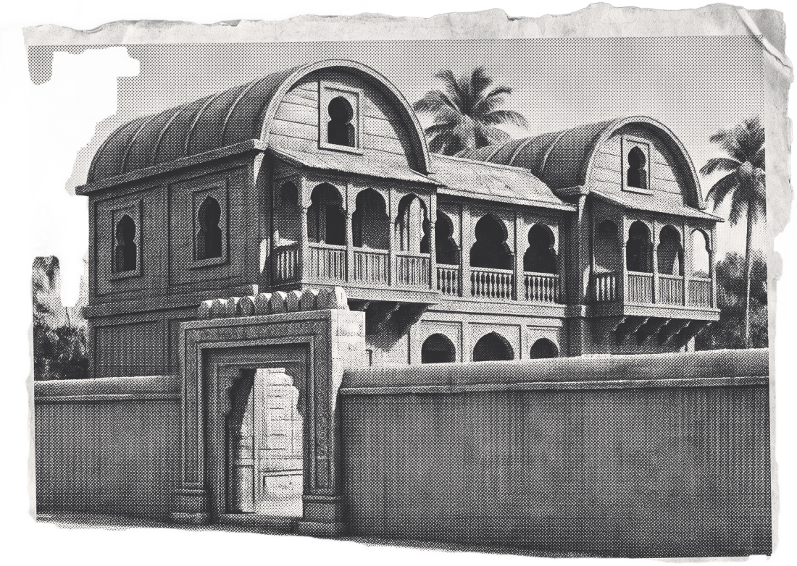
no sad things allowed
At 29,
he stepped outside.
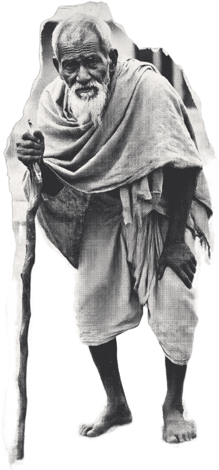
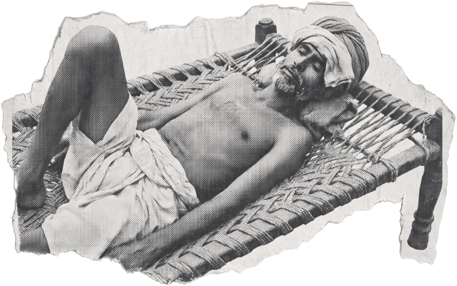
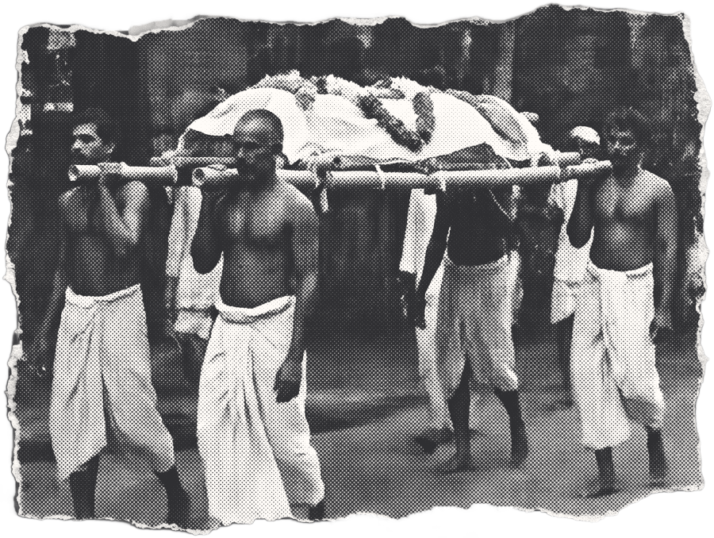
OLD
SICK
DEAD
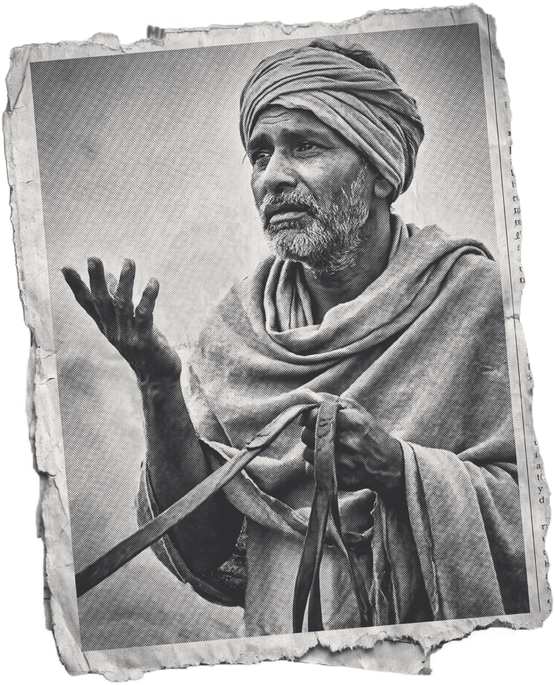
“This happens to everyone, my prince.
Even you.”
— Channa, his charioteer
That night,
he left it all.
his wife +
newborn son
Why do we suffer?
And how do we stop it?
Six years.
Barely eating.
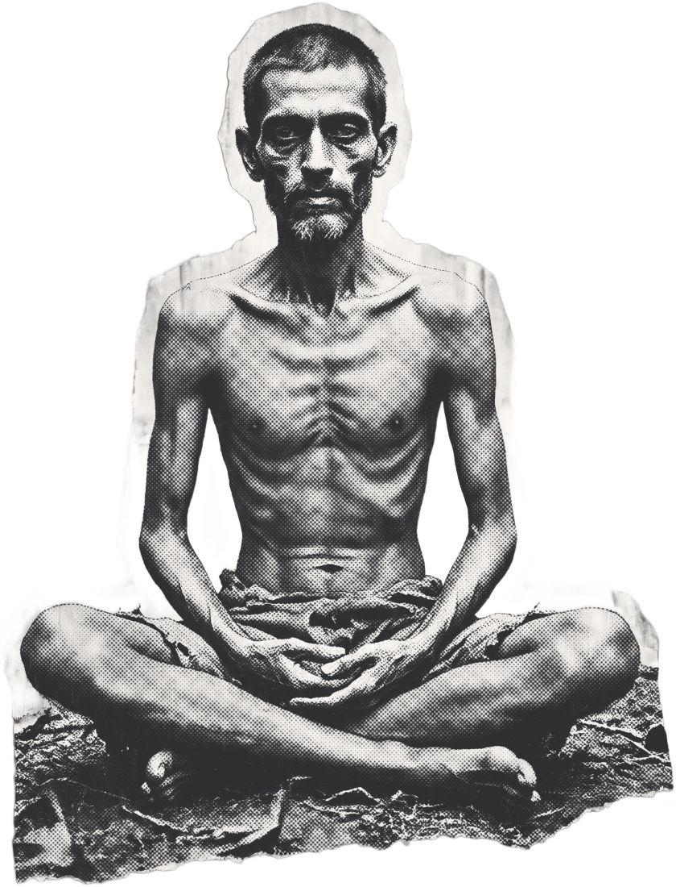
IT NEARLY KILLED HIM
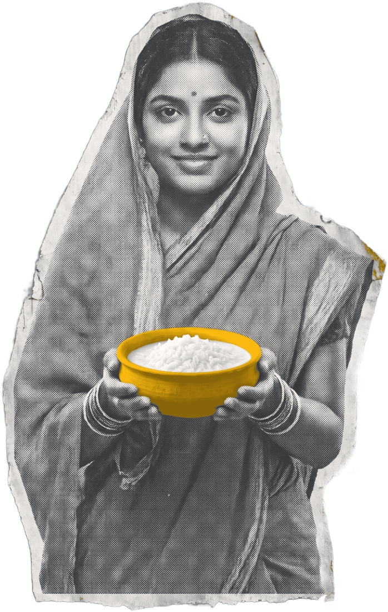
Sujata
a village woman
rice + milk
Luxury
Starving
the middle way
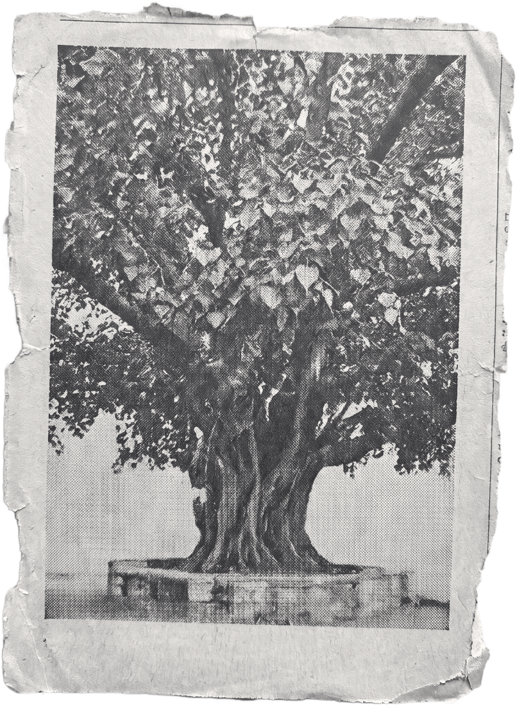
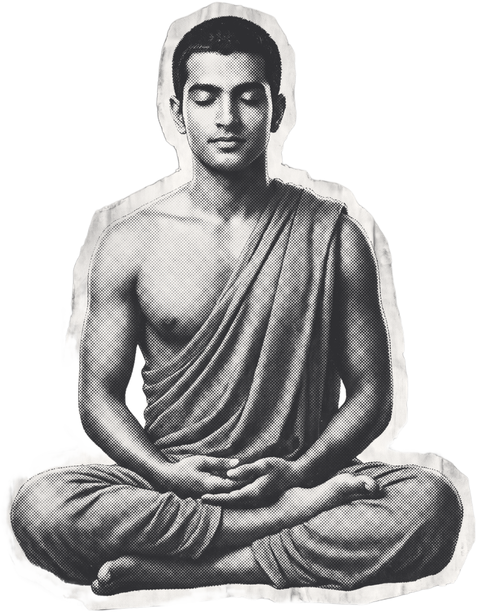
Under a tree.
Bodh Gaya
and a promise…
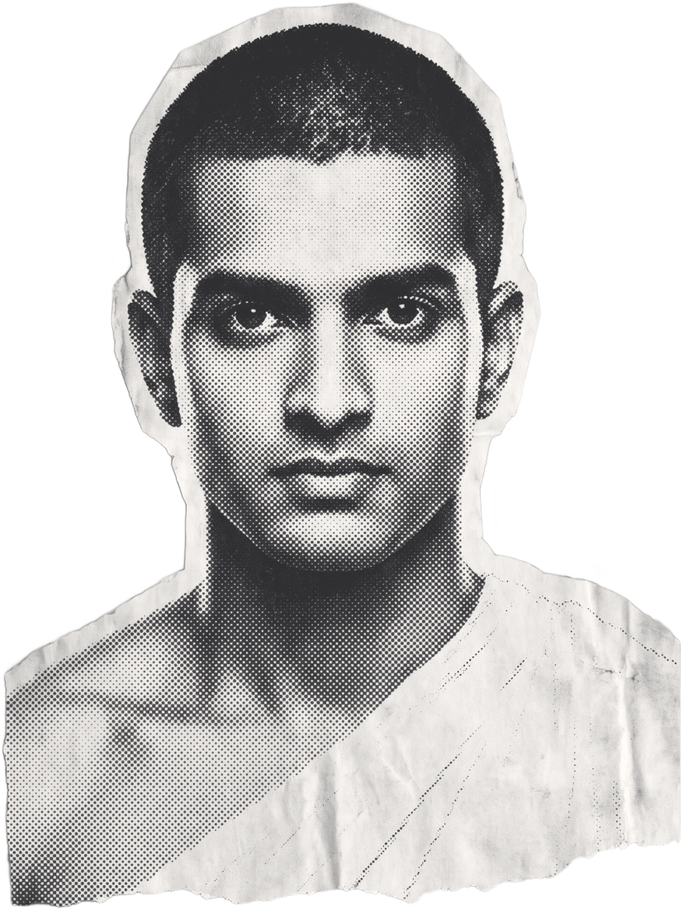
“I will not get up
until I understand.”
— Siddhartha
By sunrise,
he understood.
always wanting more → suffering
let go → suffering ends
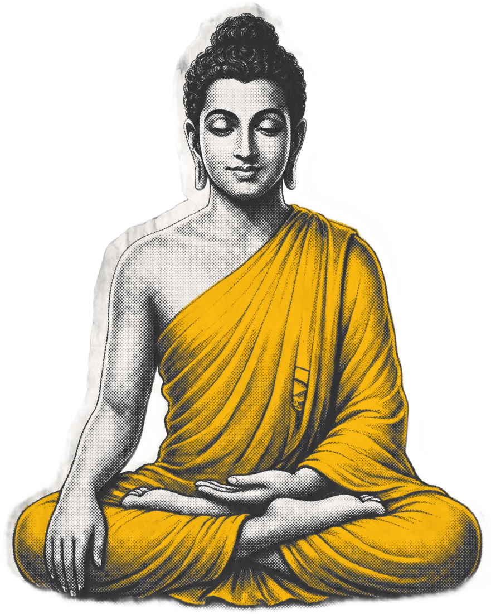
The Buddha.
the one who woke up